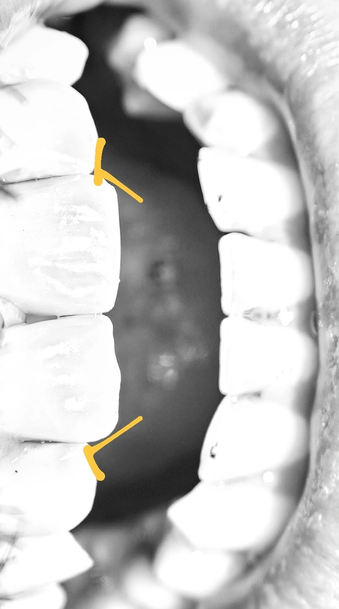

نسخه استخراجشده؛ ترجمه یا تأیید علمی انجام نشده است. وضعیت: captured
روکش تکواحدی سانترال چپ را امتحان میکنی و طولش هنگام صحبت کردن نسبت به خط لب کوتاه به نظر میرسد. کار یکی دو بار بین مطب و لابراتوار رفته و برگشته و مسئله حل نشده است. واقعاً کوتاه است؟

بیمار از قبل دیاستم داشت و تمایلی به بستن فضا نشان نداد؛ روکش جدید قرار بود کمی پهنتر شود و بیمار بهراحتی پذیرفت. این پهنای بیشتر نکتهی اصلی کیس نیست؛ چالش اصلی جای دیگری است.
وقتی بیمار صحبت میکرد، لبههای اینسایزال لترالها کاملاً متناسب و مساوی دیده میشدند؛ اما اختلاف سطح لثهها روی کست، خطای دید میساخت.
تکنسین روی کست گچی، لب بیمار و داینامیک صورت را نمیبیند. از یک طرف با شیب لبهی سانترال سمت راست روبهرو بود و از طرف دیگر، نامتقارن بودن لثهی لترالها گیجش کرده بود. غافل از اینکه نمایش دندانها نسبت به لب کاملاً یکسان است، سعی میکرد طول روکش را بر اساس همین لندمارکهای نامتقارن تنظیم کند و همین باعث کوتاهی کار میشد.
در نهایت، تلفنی یک قانون ساده به تکنسین داده شد: «کاری به اندازهی لترالها و شیب دندانهای مجاور نداشته باش!»
با این تغییر رویکرد، کلیت کار پذیرفتنی از آب درآمد و تنها به یک اصلاح بسیار جزئی در امبراژور مزیالی داخل دهان نیاز داشت.
کست گچی نسخهای بیحرکت از قوس دندانی است و لب، خط لب و داینامیک صورت را ندارد. هر معیاری که به نمایش دندان هنگام صحبت کردن یا خندیدن وابسته باشد، روی کست سنجیدنی نیست؛ پس کنترل نهایی طول روکش قدامی در دهان و در برابر خط لب انجام میشود و کست فقط مرجع روابط هندسی درونقوسی میماند.
امبراژور اینسایزال میانی و امبراژورهای دیستال دو طرف معیاری درونقوسی و متقارناند؛ برای همین از عدم تقارن لترالها و شیب لبهی دندان مجاور مصون میمانند. کوتاه دیده شدن روکش هم ممکن است صرفاً خطای دید باشد، نه خطای اندازه، و با سنجیدن مستقیم دو سانترال نسبت به هم آشکار میشود.
برای رسیدن به نتیجهی داینامیک بینقص (مثل هماهنگی با خط لب هنگام صحبت)، باید از فریبهای بصری کست مثل شیب دندان مجاور یا اختلاف لثهها چشمپوشی کرد. نگذار عدم تقارن محیطی، تمرکزت را از تناسب و تقارن اصلی سانترالها منحرف کند.
نوع سؤال: ساخت کلمه · 6 خانه
حروف منبع: س · ل · ا · ت · ی · د